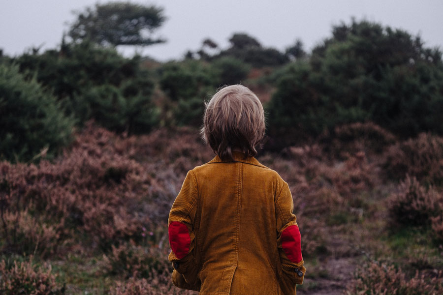

Our Promise
Your contribution is essential to Yosemite’s future.
Thanks to your support, we provide grants to Yosemite National Park based on the highest-priority needs of the park. Your dedication has funded the restoration of the trail to Lower Yosemite Fall, electronic bear-monitoring equipment to keep bears safe, life-changing youth programs and so much more.
Trails, Wildlife and Habitat
We fund trail and habitat restoration projects, wildlife-protection programs, scientific research and more to preserve and protect Yosemite’s natural wonders and enrich the visitor experience.
Youth in Yosemite Programs
Thanks to your support, our programs transform the lives of youth of all ages, while youth help transform the park.
Our Impact
Many of the trails you hike, wildlife you see and magnificent overlooks you visit are here because of the work you fund through Yosemite Conservancy.
As the philanthropic organization dedicated exclusively to Yosemite National Park, the Conservancy has been working to improve visitors’ experiences for more than 90 years. Your support has allowed us to provide more than $100 million in grants to fund Yosemite’s highest-priority projects in recent years.
Check out our map to see how your donations already have made a difference in Yosemite.
Help preserve Yosemite for future generations. Learn more below about current park projects that need your support now.
Our History
The people and ideas that have shaped Yosemite are as intrinsic to the park as granite cliffs and towering trees.
Preserving and sharing that past helps visitors forge a connection with Yosemite that will last well into the future. This year, your gifts can bring history to life in a modern way, reinvigorate celebrated traditions and strengthen scenic links to the park’s early years.
Our Wilderness
From talus slopes to wetlands, waterfall spray zones and old-growth forests, Yosemite’s more than 748,000 acres cover a huge variety of habitats.
Those protected ecosystems are rich with life but can be vulnerable to human activity. Hikers inadvertently trample fragile plants. Backpackers accidentally transport invasive seeds. Infrastructure disrupts natural water flow. Your support helps reverse those impacts, allows flora and fauna to thrive, and protects wild places for future generations.
Our Volunteers
Are you volunteering with Yosemite Conservancy? Your employer might provide donations on your behalf as a form of recognition through volunteer grant programs.
It’s an easy way for volunteers to make an additional contribution. If you’re already volunteering with Yosemite Conservancy please take a few minutes to check with your employer or your spouse’s employer to determine if grants for volunteering are available – grants that could equal hundreds, or even thousands, of dollars for Yosemite.